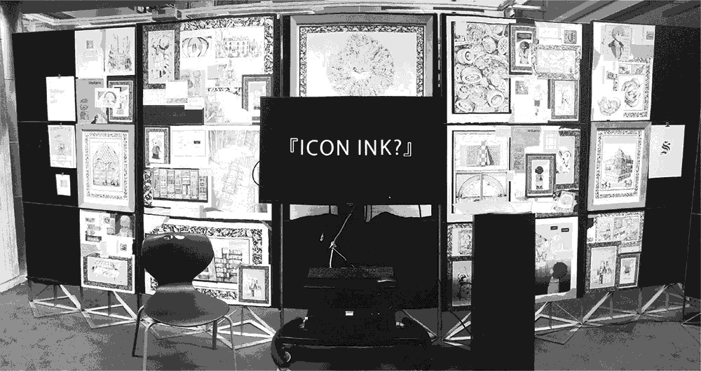

Sly
Icons in Ink
If, at the end of your first ten or fifteen years / of fighting and working and feeling, / you find you've written one line of one poem, you'll be very lucky indeed.
-e. e. cummings
Ahhh, hi there! This is page for our 2019 architecture school-work, Icons in Ink. We have many mixed feelings about this project, but it sure is something that exists and there must be at least a little to salvage from it, so we're going to drop some snippets here.
Abstract
How can the icons of comics and architecture coalesce - in ink and type - to form a rich narrative which is both idiosyncratic and empathic?
In this thesis research, we explore the relationship between architecture, comics, and psychological and religious personal representation. We seek to describe and support the notion that a precise and emotive sequential portrayal of architecture - a realisation of the symbol or icon, rendered in ink - can enhance and enrich the personal narrative motivated by that sequence, through an integrated process of precedent research, storytelling, and creative exploration and investigation.
At the core of the thesis is the comic Stellaris, which directs all the techniques and reflection developed in the thesis creative research. Stellaris is the outcome - represented in architecture, ink, and icon - around which all other bodies of research in the thesis rotate. The generative act of writing a story which is individual and psychological comes first, and out of that deeply embedded process comes a second act of piecing together its formal ideas, techniques, and intentions. Incorporated into our illustrative creative practice is a formal investigation of symbols in architecture, comics, psychology, and religion, demonstrated through the medium of comics and storytelling, both by architects making use of the form and artists building tectonic environments into their sequential narratives.
Dry Writing
This was the compulsory 'academic' part of the thesis. We were going to include the whole thing but we'll just put the introduction in - might work more on other components later!
Introduction
Icons in Ink hinges around the understanding that creative and formal practices of architecture and story-telling are indelibly linked. They influence and inform each other, and together weave a messy living web of human interaction, communication, and habitation. As a colleague once remarked about the architectural industry: "if you can tell a good story, you can do fucking anything" (Spicer, 2019); and one strand of this thesis will delve into the curation and assessment of a series of built and paper projects into which the culture and process of characters, sequences, and narratives have been deeply embedded, in order to aid our own study.
But our own personal enquiry lies in fact with the inverse of this narrative - architecture flow, a direction which appears to be a little less traversed. We are interested in the potential and actual impact and possibility of enrichment that architecture has on narrative media like books, graphic novels, music, and poems. As will be established in subsequent chapters, through research, discussion of precedents, and analysis and reflection on our own work represented at the beginning of the book, the potential for an architectural practice and mindset to infiltrate traditional story-telling typologies goes far deeper than just the tangible inclusion of drawn or described buildings in a story.
Given that the very act of forming a book - physically manufacturing that pulp-and-linen narrative vessel and composing its constituent text and images - is a constructive and tectonic act, it follows that a deep understanding of architectural generation, iteration, and document is congruent and resonant with the procedures which back narrative building and communication! As demonstrated through our graphics (and as will be explained through this reflection), these two architectural methodologies (tangibly enriching a plot with buildings and environments and constructing the architectonic vessel in which the narrative operates) can combine to express situations, ideas, and feelings which might otherwise be more difficult to convey and reflect upon.
We'll first begin with an exposition of our theoretical glue which ties these concepts together across fields: signs, symbols, and semiotics - the relationship between a symbol and the nominal object that it implies. This notion of sign-nodes and links is able to function as the typological relationship between architecture as it is constructed and perceived and the dissemination of narrative - as well as how the mind perceives these things in space and in thought. We will establish through the theories of Pinker and others the concept of sign-objects in the mind: the formation of psychological space which can be used to understand the way in which the brain comprehends objects and propositions tectonically.
Before forwarding our work on semiotics and weaving our own personal narrative back through, we'll need to fill in a couple more expository pieces. We'll turn our attention to the practice of architecture and explore how various architects have used narrative-building techniques to enrich their work, using media to draw on people's internal perceptions of architectural spaces in order to suggest certain emotive or dynamic themes. Among others, we'll investigate Tschumi's Manhattan Transcripts, and how the architect's notion of sequential 'witnesses to time' influenced his understanding of space; and we'll discuss the work of Archigram and the postmodern, pop-culture worlds and stories of the '80s through which they immersed their designs and the minds of those recipients.
Once we have assessed this bilateral link between buildings and storytelling, we can begin to weave the notion of the object-sign back in, describing how our understanding of both stories and architectonics boil down to ideas (tangible or intangible) we have constructed in our minds. Once this link is understood, we can go ahead and place our own story, Stellaris in the context of this paradigm and fully analyse which symbols we have used to access which objects, and why. Through this writing we will treat an extended discussion of the idea of the page or canvas as structured architecture, even delving into the representation of online space as a fundamentally architectural one. We assert and expand upon our conclusion that sequential media and comics remain a powerful vehicle for promoting this complex web of interaction between tectonics and mental narrative.